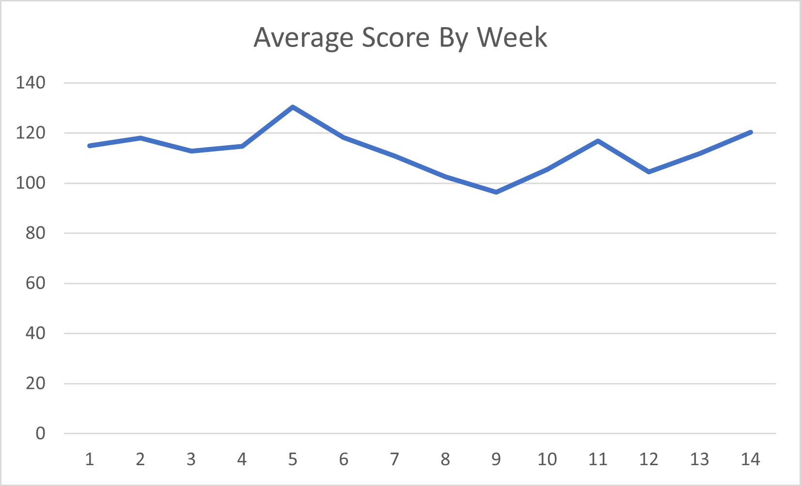
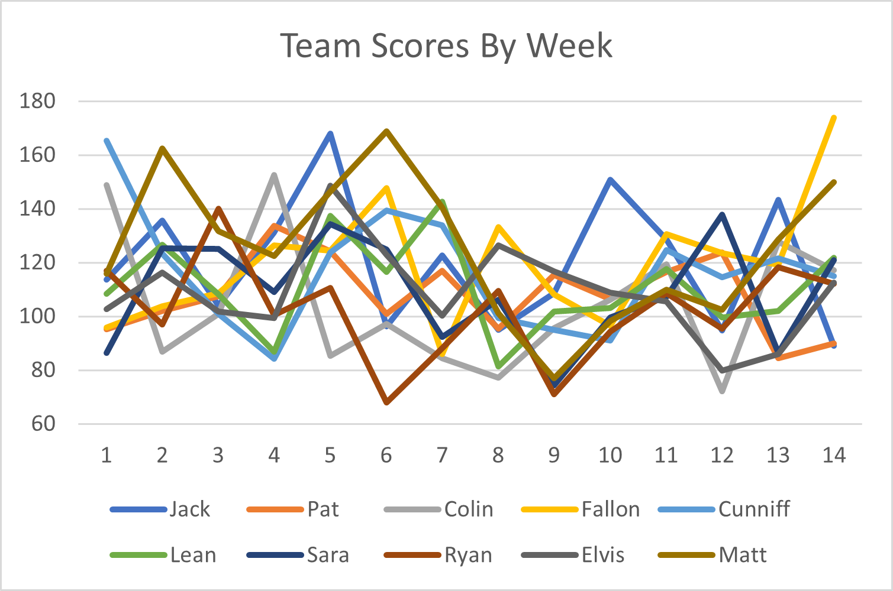

Washed Up Greyhounds REGULAR SEASON Roundup
It's finally over. 14 weeks of hell on earth only for a lucky few of us to have to suffer for 1-3 extra weeks for nothing but bragging rights and like 200 bucks. Also, Pat hasn't paid me still smh this is your public shaming. To those eliminated, congrats, you can delete the app for 9 months now. To the rest of us, I'm sorry. When your team inevitably shits the bed and loses, just remember that fantasy is the most important thing in your life and that you should be very, very upset.
First order of business: grieving the loss of our final fallen soldier.
In Memoriam
female playing
Colleen "Lean" McCormack
7-7
This is Elvis' fault.
Rest in Peace gurl.
Final Standings
1. Wuhan Bats
10-4
1688.4 Points For (2nd)
2. Scrub Daddy
9-5
1742.55 Points For (1st)
3. Boston Weathermen
9-5
1628.7 Points For (4th)
4. COOKing Dinner
8-6
1668.15 Points For (3rd)
5. Pelosi's Beefcurtains
8-6
1575.25 Points For (5th)
6. Earl Thomas' Brother
7-7
1561.75 Points For (6th)
7. female playing
7-7
1524.9 Points For (7th)
8. Wharf Rat Owner
5-9
1495.25 Points For (8th)
9. Wandisimo
4-10
1440.5 Points For (9th)
10. Joe Biden's Speechwriter
3-11
1399.5 Points For (10th)
Playoff Picture
In 3 weeks, one of these remaining darlings will walk away with it all. As long as it's not Cunniff, this season is a win in my book.
1. Wuhan Bats
Jawn Lunch
versus
BYE WEEK
2. Earl Thomas' Brother
Elvis Smoth
versus
BYE WEEK
3. Scrub Daddy
Matt Kinloch
versus
6. Pelosi's Beefcurtains
Sara Aloupis
4. Boston Weathermen
Matt Cunniff
versus
6. COOKing Dinner
Andrew Fallon
In perhaps the most undeserved BYE week of all time, Earl Thomas' Brother gets a free pass to the second round alongside God King Emperor Wuhan Bats. Scrub Daddy will square off against the team whose name reminds him of the nightmare he's had every night for the past 5 years, Pelosi's Beefcurtains. Boston Weathermen is matched up against COOKing Dinner and will probably lose. On a scale of 1-10 the meltdown will be a 100.
Please Don't Touch My Graff
 Awww look they're ugly.
I'm continuing to retire a few sections to revisit them in the Year End Review (this is just the regular season review).
The Fr. Linnane's Special Little Hound Award
The final Fr. Linnane's Special Little Hound winner won this award in a spectacular fashion, scoring the most points out of any team in any week at the very last second of the regular season, with 173.9 points. Making himself an immense playoff threat with such a monstrous performance, I'm glad I'm not the sucker forced to play him in the first round. Sorry Cunniff, good luck.
The Fr. Linanne's Special Little Hound of Week 10 is...
COOKing Dinner
Andrew Fallon
Congrats, you sucked the least!
A running tally of Fr. Linnane's Special Little Hound Award winners can be found here:
| Team | Special Little Hound Wins |
|---|---|
| Wuhan Bats | III |
| Pelosi's Beefcurtains | II |
| Scrub Daddy | II |
| COOKing Dinner | II |
| Joe Biden's Speechwriter | I |
| Wandisimo | I |
| female playing | I |
| Earl Thomas' Brother | I |
| Boston Weathermen | I |
The Lou of the Week Award
In an unexpected turn of events, a top dog of the league ends up as the final Lou of the Week award winner. With a dissapointing 89.05 points, our winner should be glad his week has a BYE week to rest up even though they actually aren't resting and will probably wind up injured for when things actually matter in 2 weeks. Oh well, not my problem.
The Lou of the Week is...
Wuhan Bats
Jawn Lunch
Congrats, you suck!
A running tally of Lou of the Week winners can be found here:
| Team | Lou of the Week Wins |
|---|---|
| Wandisimo | IIIIII |
| Boston Weathermen | III |
| Joe Biden's Speechwriter | III |
| Pelosi's Beefcurtains | I |
| Wharf Rat Owner | I |
| Wuhan Bats | I |
Talk to you all again in 3 weeks for the post-season shitstravaganze where I get deep, down and dirty into the fine details of the season. Bye ;)
Archive
| Wk1 | Wk2 | Wk3 | Wk4 | Wk5 | Wk6 | Wk7 | Wk8 | Wk9 | Wk10 | Wk11 | Wk12 | Wk13 | Wk14 |
|---|